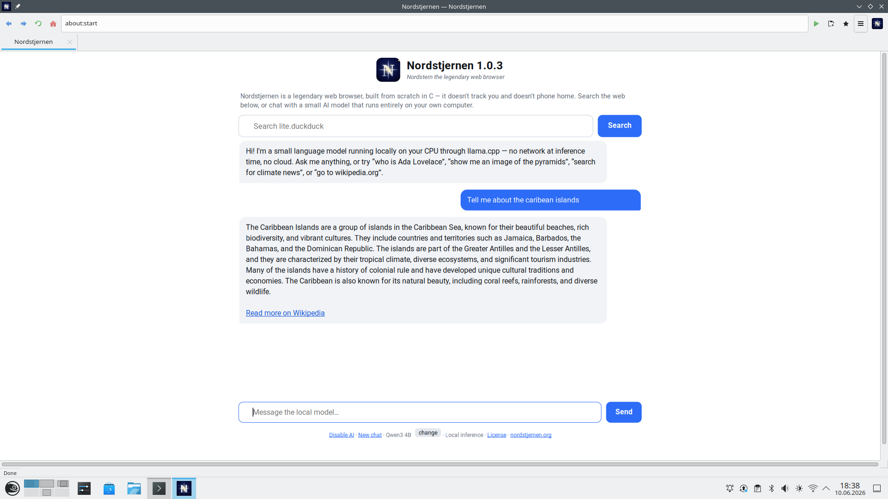

Nordstjernen Browser 1.0.7 released!
Today, 14 June 2026, we are pleased to announce the release of Nordstjernen 1.0.7, a maintenance release that builds on 1.0.6. Nordstjernen is a web browser, written from scratch in C, focused on supporting the HTML and CSS standards. It runs on Windows, Mac and Linux, with an Android port in progress. Nordstjernen is built in Norway.
This is a focused bug-fix and stability release: it continues to iron out rough edges reported since 1.0.6, with rendering and reliability fixes throughout. There are no new external dependencies and no telemetry — just a steadier 1.0.
Nordstjernen Browser version 1.0.7 is available now! Read the full release notes here, or jump straight to the downloads.
{kind=link}

HTML Standard. Behaviour is measured against the spec text, section by section, not against another browser — 123 spec rows fully implemented, 48 partial, 4 absent as of June 2026. See the standards table below and docs/HTML-compatibility.md.
Secure. Process-per-tab design — each tab runs in its own sandboxed renderer process (seccomp + Landlock on Linux), talking to the UI over IPC and shared-memory framebuffers · no JIT.
Minimalism. The whole engine is about 109,000 lines of C written by Claude and Codex (117 files in src/, excluding the vendored libraries) — small enough for one person to read and audit end-to-end.
Nordstjernen has no JIT so it is much more secure, and can still be fast enough. It ships no telemetry of any kind.
news
14 JUN 2026 · Nordstjernen 1.0.7 released — a maintenance release. Release notes »
14 JUN 2026 · Nordstjernen 1.0.6 released — a maintenance release. Announcement » · Release notes »
13 JUN 2026 · Nordstjernen 1.0.5 released — a maintenance release. Announcement » · Release notes »
13 JUN 2026 · Nordstjernen 1.0.4 released — a maintenance release. Announcement » · Release notes »
10 JUN 2026 · Nordstjernen 1.0.3 released — faster page loads and a UI translated into 40 languages. Announcement » · Release notes »
9 JUN 2026 · Nordstjernen 1.0.2 released — a maintenance release. Announcement » · Release notes »
7 JUN 2026 · Nordstjernen 1.0.1 released — a maintenance release. Announcement » · Release notes »
5 JUN 2026 · Nordstjernen 1.0.0 released — the first stable release. Announcement » · Release notes »
31 MAY 2026 · Nordstjernen 0.8.1 released. Release notes »
28 MAY 2026 · Nordstjernen 0.8.0 released. Release notes »
24 MAY 2026 · Nordstjernen 0.7.0 released. Release notes »
specifications
| language | C · ~109 kLOC across 117 files in src/, fully auditable |
|---|---|
| html / css | lexbor (parser, WHATWG URL, selectors) |
| javascript | quickjs-ng — bytecode interpreter, no JIT |
| webassembly | WAMR — interpreter behind the WebAssembly JS API |
| images | Wuffs v0.4 (PNG / GIF / BMP / JPEG / WebP lossless) |
| ui | GTK 4 · Pango text shaping · one window per page, no tab strip |
| network | libcurl · HTTP/2 |
| hardening | process-per-tab · seccomp + Landlock sandbox on Linux · sandboxed renderer processes · no JIT |
| privacy | no telemetry · partitioned cookies · HSTS · CSP |
| standards | 123 spec rows fully implemented, 48 partial, 4 absent (June 2026) |
| platforms | linux · windows · macos · android (port in progress) |
| license | NSL-1.0 → MIT after 10 years |
download
Latest tagged release: Nordstjernen 1.0.7 — released 14 June 2026. full release notes »
For platform-specific builds, use the nightly builds. They are rebuilt
from main each night and point at the latest code — bleeding
edge, expect rough edges.
| Windows | nordstjernen-windows-x86_64.zip |
|---|---|
| macOS | nordstjernen-macos.dmg |
| Debian | nordstjernen-debian-amd64.deb |
| Ubuntu | nordstjernen-ubuntu-amd64.deb |
| openSUSE | nordstjernen-opensuse-x86_64.rpm |
| Linux (portable) | nordstjernen-linux-x86_64.zip |
| Alpine (musl) | nordstjernen-alpine-x86_64.apk · .zip |
| Java API (JDK 21) | nordstjernen-java.jar · sources · javadoc · API docs |
| Source | nordstjernen-src.tar.xz |
| Checksums | SHA256SUMS · all nightly files |